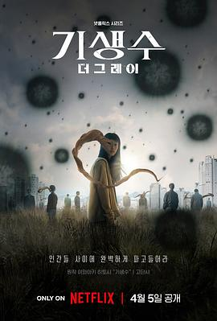

寄生兽：灰色部队 / 기생수: 더 그레이
又名：寄生兽：The Gray / Parasyte: The Grey
剧情还挺精彩的，节奏也是乃飞一贯的飞快。片尾怎么菅田将晖又来了？？？怎么老是你 //毕竟没看过原作，和想象的不太一样，但是还挺精彩的！目前才看了一集，感觉非寄生兽的打斗戏份还挺多 XD
作品信息
| 导演 | 延尚昊 |
| 编剧 | 延尚昊 / 柳勇在 |
| 主演 | 全素妮 / 具教焕 / 李贞贤 / 权海骁 / 金仁权 / 菅田将晖 |
| 类型 | 剧情 / 科幻 / 惊悚 |
| 制片国家/地区 | 韩国 |
| 语言 | 韩语 |
| 首播 | 2024-04-05(韩国) |
| 季数 | 1 |
| 集数 | 6 |
| 单集片长 | 50分钟 |
| IMDb | tt21874396 |
说过什么
2024-04-09 19:26:01
看过 · 时间来自广播，短评来自标记页
剧情还挺精彩的，节奏也是乃飞一贯的飞快。片尾怎么菅田将晖又来了？？？怎么老是你 //毕竟没看过原作，和想象的不太一样，但是还挺精彩的！目前才看了一集，感觉非寄生兽的打斗戏份还挺多 XD
2024-04-07 19:45:48
广播 · 在看
2024-04-07 04:10:32
广播 · 想看
最后一次看到是 2026-08-01T11:04:26+10:00 · 豆瓣原页